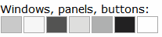
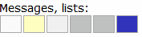
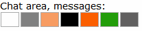
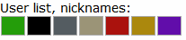

Client Themes
The color themes page allows you to customize the look and feel of the RealChat client window so that it matches
your existing website.
Theme List
The theme list at the top of the Control Center allows you to choose which theme is active for editing. There are a
total of 10 themes that can be modified according to your needs. Five of the them are pre-configured, and the
remaining five are blank. You may modify any of the themes.
- Theme Name - allows you to define the name of the theme which will be displayed in the Code Generator.
- Save - The Save button will save any changes that have been made to the profile.
- Reset - The Reset button will reset the theme to the colors that were selected when the theme was last
saved.
Color Controls
The color controls are used to set the color of various user interface elements. When you change a color, the live
preview will be automatically updated. If you change your mind about the color settings, you can select the Reset
button to revert to the previous colors.
To modify a color, first select the user element you want to modify. The name of each element is displayed in a tool
tip when you move the cursor over the element. When you select an element, the name of the element is displayed in
bold face next to the Selected label i.e:
Selected: Desktop background
After you select an element, you can modify the color by selecting a color in the color picker or by typing a color
and pressing the Tab key.
All colors are hexadecimal RGB colors.


From left to right, the colors in this section are:
1. Desktop background
2. Panel/Button/Tab background
3. Panel/Button/Tab foreground (labels)
4. Inactive Tab/Toggled Button background
5. Panel/Button/Tab border
6. Window titlebar background
7. Window titlebar foreground

From left to right, the colors in this section are:
1. Background of a shaded item
2. Background of a highlighted (hovered) item
3. Separator line
4. Avatar border color
5. Timestamp
6. Link

From left to right, the colors in this section are:
1. Chat area background
2. Server message, body
3. Server message, highlighted item
4. User message, body (default color)
5. User message, user name
6. User message, own name
7. Private message (tells you)

From left to right, the colors in this section are:
1. Own name
2. Online user (also used as room name)
3. Away user (also used as room topic)
4. Ignored user
5. Administrator
6. Operator
7. Room operator
3D Effect
The 3D effect can be set to either None or Plastic. The plastic setting causes some elements to have a three
dimensional appearance.
Importing and Exporting Themes
If you would like to share themes between sites, you can import and export themes.
To export a theme, click Export, and then select the contents of the Raw color theme source text box and copy them
to the clipboard. You can then paste them into a text editor to save a copy of the theme.
To import a theme, first paste the theme you want to import into the Raw color theme source text box and then click
the Import button.
The theme gallery
In addition to the predefined themes that are installed with RealChat, we have a variety
of themes that can be downloaded from our website. You may also showcase your themes on realchat.com and share
them with others.
Copyright © 1998—2007, RealChat Software. All rights reserved.